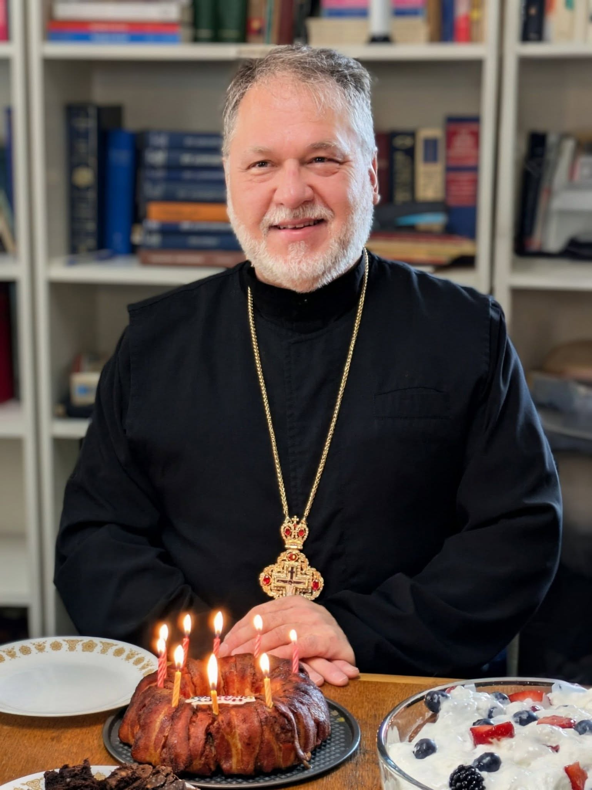
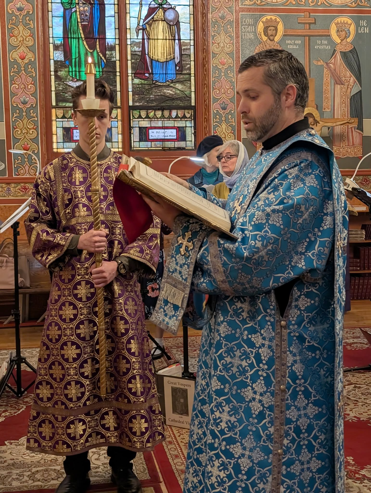
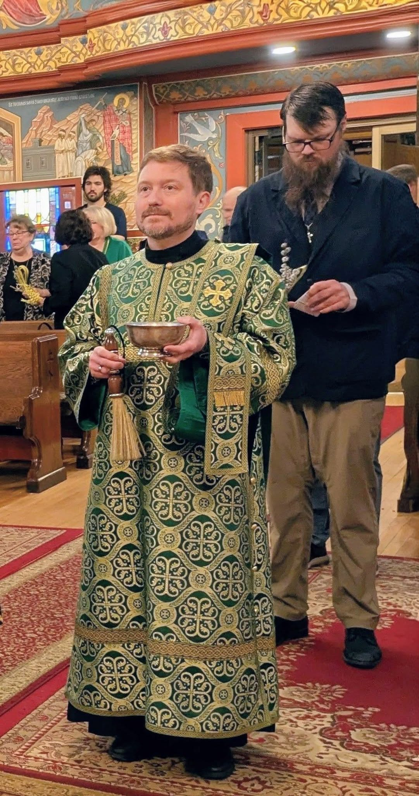
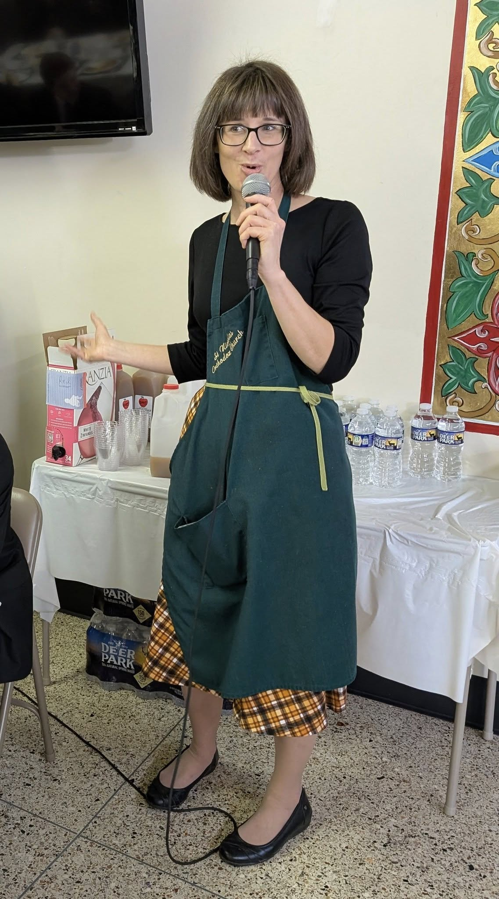
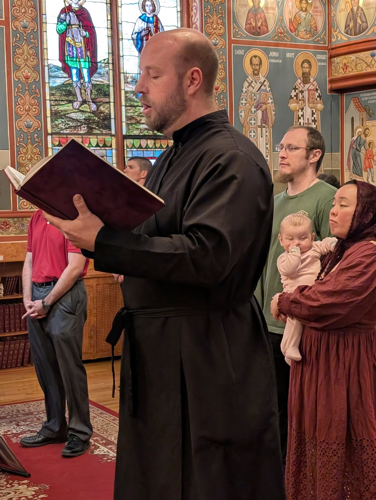

Our Leadership
Our Leadership

Fr Thomas Soroka
frthomas@orthodoxpittsburgh.orgFather Thomas is a native of Pittsburgh, holds degrees from Duquesne University, and attended St Vladimir's Orthodox Theological Seminary in Crestwood NY. He descends from a long line of Orthodox priests and church musicians. He oversees the work of the Departments of the Orthodox Church in America and he serves on the Diocesan Council of the Archdiocese of Pittsburgh and Western Pennsylvania. He's a frequent speaker in parishes on various spiritual topics including parish growth and leadership, and directs the Pan-Orthodox Choir of Pittsburgh. Fr Thomas can also be heard regularly on Ancient Faith Radio and occasionally on local Christan radio. He and his wife, Matushka Joni Soroka, a native of Louisville KY, have three daughters.

Dn Luke Loboda
dnluke@orthodoxpittsburgh.orgDeacon Luke was ordained in 2016 to the Holy Diaconate by Archbishop Melchisedek and has been a member of St Nicholas Church since 2009. A life-long Orthodox Christian, he and his wife, Dr Ashley Loboda, have three sons and a daughter. He is a graduate of Ashland University (Ohio), earned a MA in American History and Government, and teaches in a local school district.

Dn John Skowron
dnjohn@orthodoxpittsburgh.orgDeacon John was ordained to the Holy Diaconate in 2021 by Archbishop Melchisedek and has been a member of St Nicholas since 2013. Born and raised in Pittsburgh, he and his wife Kate have three daughters and one son. He obtained his undergraduate degree from Georgetown University, a masters degree from Oxford University, and a law degree from the University of Pittsburgh. He is a licensed attorney and practices law at a firm in downtown Pittsburgh.

Melissa Graff
mgraff@orthodoxpittsburgh.orgMelissa, a native of Pittsburgh, holds a degree in Business Administration from the University of Pittsburgh. Formerly employed as the Assistant Director of Annual Programs at the University of Pittsburgh, besides managing a busy household, she currently assists the Departments of the Orthodox Church in America and is a Production Assistant for Ancient Faith Radio. A life-long Orthodox Christian, she and her husband, Nathan, have three children.

Rdr James Wargo
choirdirector@orthodoxpittsburgh.orgJames Wargo is a lifelong Orthodox Christian and son of Fr Joseph Wargo. He is from Butler County, Pennsylvania and was raised in St Andrew's in Lyndora. In 2004, he received an associates degree from Pittsburgh Technical Institute in Computer Networking Systems and works in this field as an IT support specialist. He was a choir member in the church and the local community from childhood, and was also involved in musical theater. He was trained as a choir director through the OCA and has directed at St Andrew's and at the Cranberry mission parish of the Antiochian diocese. He is an avid golfer, plays volleyball, and loves to travel with his wife Jessica.

Danielle Bartko
choirdirector@orthodoxpittsburgh.orgDanielle Bartko is a native of New Jersey and a life-long Orthodox Christian from the Carpatho-Rusyn tradition. She has directed choirs at three different parishes in Pennsylvania and was a cantor in both Pennsylvania and New Jersey. She has a B.A. in Biology and a minor in music from Lafayette College and a teaching certificate from DeSales University with a focus on math and science. She and has taught at both in-person and online Orthodox Christian schools. She currently is a home-schooling mom and online educator at Saint Raphael School, and is married with two children.